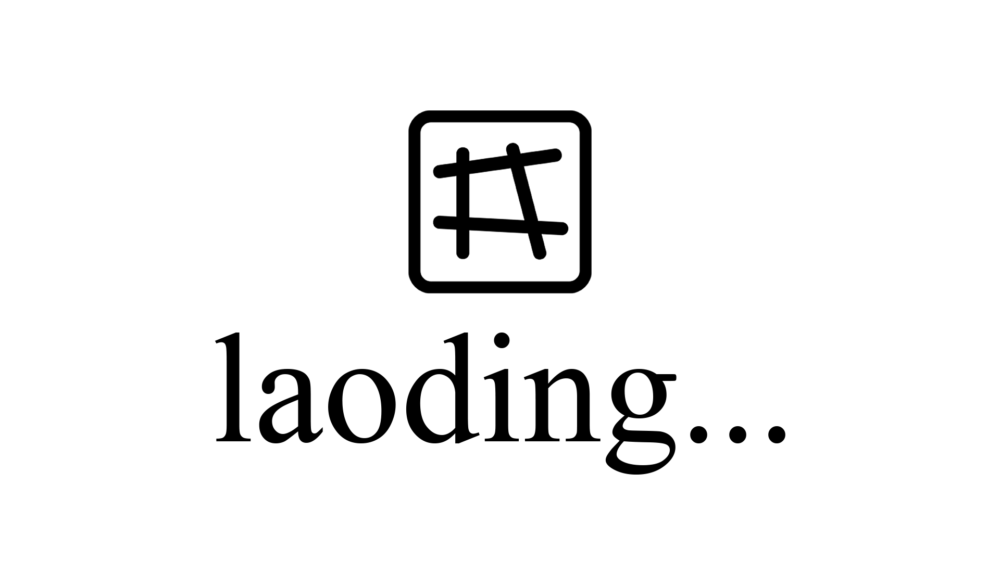

By downloading, installing, accessing, or using the LAO browser extension ("Software"), you agree to these Terms of Service.
1. Artistic Project
LAO is an artistic and experimental software project intended for creative, educational, and expressive purposes. Any references to the Software as a "virus" are part of the project's artistic concept and presentation.
2. Voluntary Use
You choose to download, install, and use the Software voluntarily and at your own risk. You are solely responsible for determining whether the Software is appropriate for your device, browser, and intended use.
3. No Warranty
The Software is provided "AS IS" and "AS AVAILABLE" without warranties of any kind, whether express or implied, including but not limited to warranties of merchantability, fitness for a particular purpose, availability, security, compatibility, or non-infringement.
4. Limitation of Liability
To the maximum extent permitted by applicable law, the creator, developer, contributors, operators, and affiliates of the Software shall not be liable for any direct, indirect, incidental, consequential, special, exemplary, or punitive damages arising from or relating to the use of, inability to use, installation of, removal of, or interaction with the Software.
5. No Guarantee of Functionality
The Software may change, be modified, be discontinued, malfunction, or be removed at any time without notice. No guarantee is made regarding performance, uptime, availability, or continued support.
6. Intellectual Property
All intellectual property rights relating to the Software, including but not limited to its code, artwork, visual assets, concepts, branding, and documentation, are owned by LAO unless explicitly stated otherwise.
7. Indemnification
You agree to defend, indemnify, and hold harmless LAO and any contributors or affiliates from claims, damages, liabilities, costs, and expenses arising from your use of the Software or your violation of these Terms.
8. Nature of the Software
The Software is primarily an artistic browser extension that modifies the visual appearance of webpages by replacing certain visual elements with images. The Software is not intended to damage devices, destroy data, obtain unauthorized access to systems, or perform malicious actions. Any characterization of the Software as a "virus" is artistic, symbolic, and conceptual in nature.
9. Host Integration
Upon installation, the User acknowledges the arrival of LAO and agrees to permit the LAO symbol to occupy a space within their thoughts. The User may carry the symbol through thought, memory, dream, gesture, language, or ritual. No physical implantation is required (but is appreciated!); the occupation is conceptual, voluntary, and metaphysical.
(This clause exists solely as part of the artistic narrative of the Software and has no legal, medical, religious, or bodily effect.)
10. Severability
If any provision of these Terms is found unenforceable, the remaining provisions shall remain in full force and effect.
11. Viral Propagation (Non-Binding)
In keeping with the conceptual theme of the Software, users agree to at least consider transmitting the project's webpage link to another human being. Whether such transmission actually occurs remains entirely within the user's discretion. This clause is symbolic in nature and shall not be interpreted as creating a legal duty or obligation.
12. Memetic Dissemination
By using the Software, the User agrees to consider participating in the continued propagation of the LAO image, symbol, or associated artwork through lawful and voluntary means ;) Such means may include sharing digital media, displaying printed materials, creating derivative artworks, discussing the project with others, or other forms of creative expression permitted by applicable law ;) ;)
Nothing in this clause shall be interpreted as requiring any action, creating any legally enforceable obligation, or encouraging trespass, vandalism, unauthorized graffiti, property damage, infringement of rights, or any unlawful conduct. The decision to share, display, reproduce, or otherwise disseminate the LAO image remains entirely at the User's discretion.
13. Acceptance
By downloading, installing, or using the Software, you acknowledge that you have read, understood, and agreed to these Terms.
— LAO <3